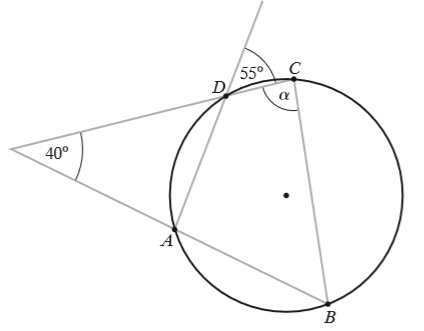
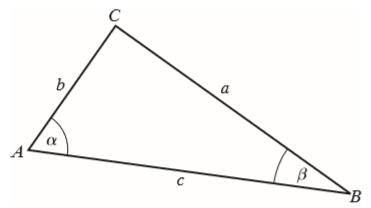

Matura 2018 listopad PR
Jeżeli \((a_n)\) jest nieskończonym i niemonotonicznym ciągiem geometrycznym, w
którym \(a_1=16\) i \(a_3=1\), to suma wszystkich jego wyrazów wynosi:
A.\( 21\frac{1}{3} \)
B.\( 12{,}8 \)
C.\( 0{,}8 \)
D.\( 5\frac{1}{3} \)
B
Dziedziną funkcji \(f(x)=\log_{x+1}(4-x^2)\) jest
A.\( (-2,0)\cup (0,2) \)
B.\( (-2,-1)\cup (-1,2) \)
C.\( (-1,0)\cup (0,2) \)
D.\( (-1,2) \)
C
Równanie \(\left|3-\frac{1}{x}\right|=m\) dwa różne rozwiązania dodatnie wtedy i
tylko wtedy, gdy:
A.\( m\in (0,3)\cup (3,+\infty ) \)
B.\( m\in (0,3) \)
C.\( m\in (3,+\infty ) \)
D.\( m\in (0,+\infty ) \)
B
Funkcja \(f(x)=\frac{x+3}{(x-2)^2}\):
A.nie ma ekstremów lokalnych
B.ma dwa ekstrema lokalne w punktach \( x_1=-8 \) i \(x_2=2\)
C.ma dwa ekstrema lokalne w punktach \( x_1=-2 \) i \(x_2=8\)
D.ma jedno ekstremum lokalne w punkcie \( x_1=-8 \)
D
Czworokąt \(ABCD\) przedstawiony na rysunku jest wpisany w okrąg. Miara kąta
\(\alpha \) jest równa: 
A.\( 85^\circ \)
B.\( 90^\circ \)
C.\( 75^\circ \)
D.\( 55^\circ \)
A
Oblicz granicę \(\lim_{x \to -2}\left(\frac{x-3}{x+2}-\frac{x^3-52}{x^3+8}\right)
\). Zakoduj kolejno, od lewej do prawej, cyfrę jedności i dwie pierwsze cyfry po przecinku
rozwinięcia dziesiętnego otrzymanego wyniku.
\(2{,}50\)
Rozwiąż nierówność \(3x-|2x-7|\lt 11\).
\(x\lt 4\)
Rozwiąż równanie \(\sin \left(x+\frac{\pi}{6}\right)+\cos x=\frac{3}{2}\) w
przedziale \(\langle 0; 2\pi \rangle \).
\(x\in \left\{0, \frac{\pi}{3}, 2\pi \right\}\)
Trapez prostokątny jest opisany na okręgu o promieniu \(5\). Kąt ostry trapezu ma
miarę \(45^\circ\). Oblicz długości odcinków, na które punkt styczności okręgu podzielił ramię
pochyłe trapezu.
\(5\sqrt{2}-5\) oraz \(5\sqrt{2}+5\)
W trójkącie \(ABC\): \(|AB|=c\), \(|AC|=b\), \(|BC|=a\) oraz \(|\sphericalangle
BAC|=\alpha \) i \(|\sphericalangle ABC|=\beta \) (zobacz rysunek). Wykaż, że jeżeli \(\alpha
=2\beta \), to \(a^2-b^2=bc\). 
Wielomian \(W(x)=2x^3+ax^2+bx+c\) jest podzielny przez trójmian \(x^2+x-6\), a przy
dzieleniu przez dwumian \(x+1\) daje resztę \(6\). Wyznacz wartości współczynników \(a\), \(b\) i
\(c\).
\(a=3, b=-11, c=-6\)
Ze zbioru wszystkich liczb naturalnych dodatnich nie większych od \(30\) losujemy
kolejno \(2\) razy po jednej liczbie bez zwracania. Oblicz prawdopodobieństwo tego, że otrzymamy w
ten sposób parę liczb, których iloczyn jest mniejszy od \(30\) pod warunkiem, że pierwsza wylosowana
liczba jest mniejsza od drugiej wylosowanej liczby.
\(\frac{49}{435}\)
Wyznacz wszystkie wartości parametru \(m\), dla których dwa różne rozwiązania
\(x_1\) i \(x_2\) równania \((m+1)x^2+2\sqrt{2}x-m^2+2=0\) spełniają warunek \({x_1}^2+{x_2}^2\ge
m-x_1x_2\).
\(m\in (-2,-1)\cup (-1,0)\cup \left(1,
\frac{-3+\sqrt{33}}{2}\right\rangle \)
Liczbę \(272\) przedstaw w postaci sumy czterech całkowitych składników tworzących
ciąg geometryczny i takich, że trzeci składnik jest o \(48\) większy od pierwszego.
\(272=27+45+75+125\)
Napisz równania wszystkich prostych, które są jednocześnie styczne do paraboli o
równaniu \(y=\frac{1}{4}x^2-1\) i do okręgu o równaniu \(x^2+(y+6)^2=8\).
\(y=x-2, y=-x-2, y=\sqrt{17}x-18,y=-\sqrt{17}x-18\)
W graniastosłupie prawidłowym trójkątnym suma długości trzech różnych krawędzi
wychodzących z jednego wierzchołka wynosi \(S\). Wyznacz objętość tego graniastosłupa jako funkcję
długości jednej z jego krawędzi i podaj dziedzinę tej funkcji. Oblicz wymiary graniastosłupa,
którego objętość jest największa. Oblicz tę objętość.
\(a=H=\frac{S}{3}, V=\frac{\sqrt{3}}{108}S^3\)